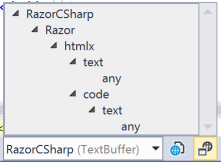
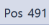

Features useful for Visual Studio extension developers extending the text editor!
With the press of a button, you can also open that specific buffer contents into a new editor window.
You can also explore the content type tree for the specified buffer.
And also easily check what the position of the caret into the main text buffer is (not just the line/column positions). 